参考资料：
在计算机图形学中，着色就是对不同物体应用不同材质的过程。
先来看一张照片：
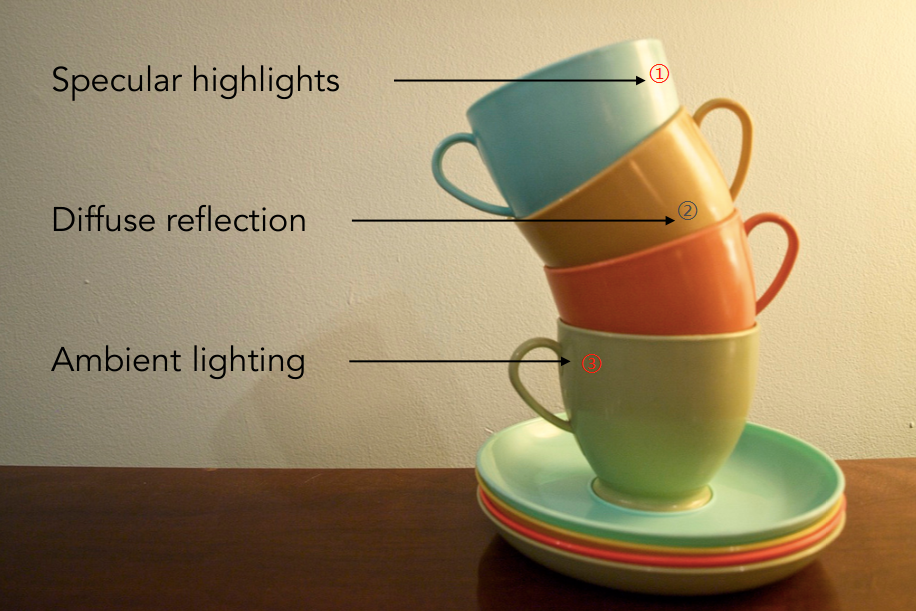
观察上图中的茶杯，不难发现光源在右上侧方向，茶杯在光照下明显有几处特征：
在计算机图形学中，通过布林冯反射模型来实现着色。
布林冯反射模型定义要从三个角度考虑来完成着色：
着色点
我们知道，实际中的物体表面可能是平面，也可能是曲面，但是，在图形学中，我们规定，在一个极小的范围内，物体的表面就是一个平面，这个范围称为着色点（shading point）。
同时，在 shading point 上做一些其他的定义，如下图：
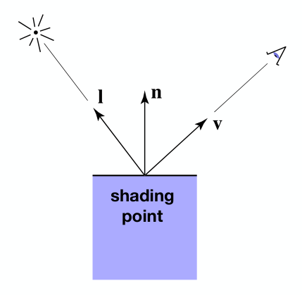
shading
在着色中，只考虑物体表面对光的反射，不考虑物体是否被遮挡，是否在阴影中等问题。
首先，来回顾下漫反射的特点，如下图：
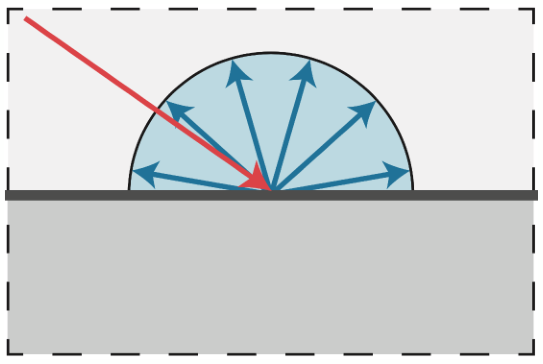
那么，在上面的茶杯示例中，为什么一个杯子的不同位置有明暗的区别呢？
假设存在如下这样一束光，垂直照射物体表面，那么着色点可以接收到全部的光线：
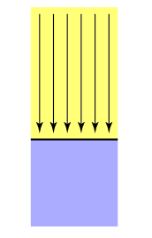
如果物体表面倾斜一定角度，那么只能接收到部分光线：
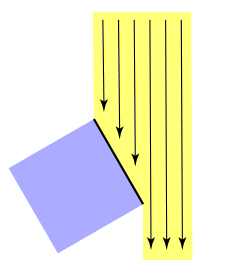
接下来，将着色点的一系列定义应用到这个物体表面：
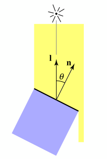
不难发现，可以直接用光线防线
依然以茶杯为例，如果从距离茶杯10m远的位置和1m远的位置分别看茶杯，茶杯同一位置的亮度肯定是不同的，一定是1m的距离看要更亮一些，生活经验可以给我们这个结论，究其原因，很简单，一定是更远的距离导致进入我们眼睛的光线更少，从而茶杯更暗。 但是只知道原因不够的，在计算机图形学中，需要能够量化接收到的光线才能够进行渲染。
那么，对于不同位置接收到的光线强度是如何量化的呢？
来看下面这张图：
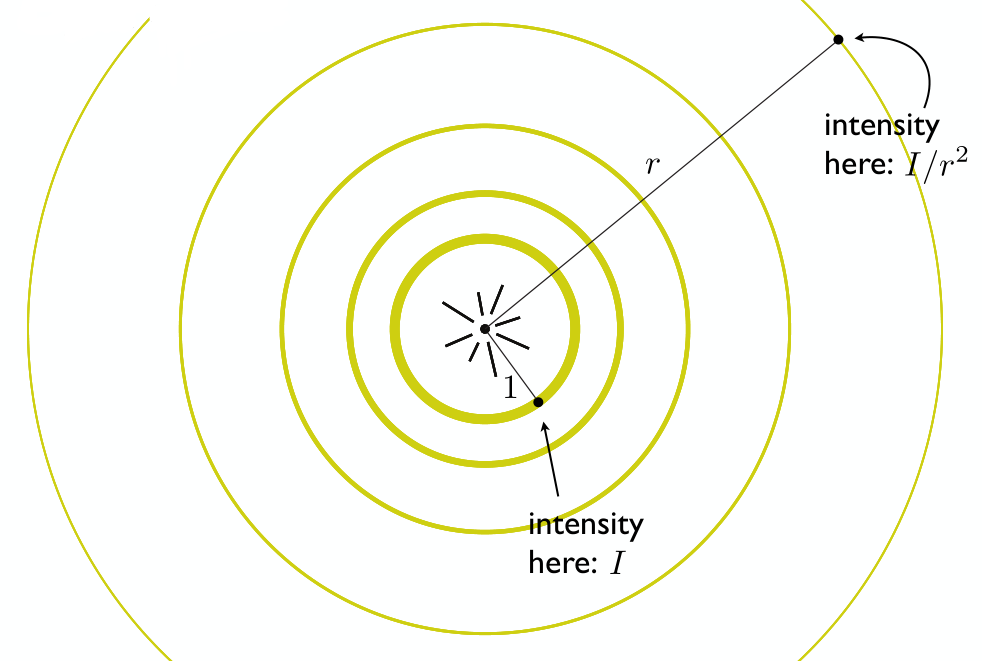
上图中，中心点表示光源，光源外一个一个圆表示不同大小的球面（由于在三维空间中），距离光源最近的球面与光源的距离为单位距离1，我们定义，该球面上任一点接收到的光线强度为
这样，我们就可以将不同距离接收到的光线强度进行量化了。
好，通过上面对物体表面的倾斜角度对接收到的光线强度的影响和物体到光源的距离对接收到的光线强度的影响，可以整理得到计算漫反射光的公式：
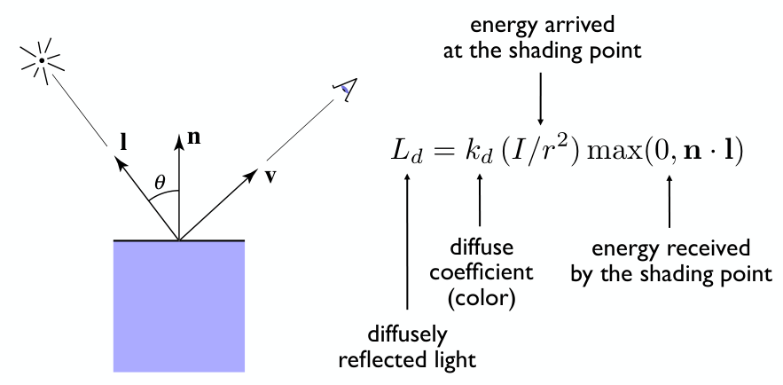
通过
通过
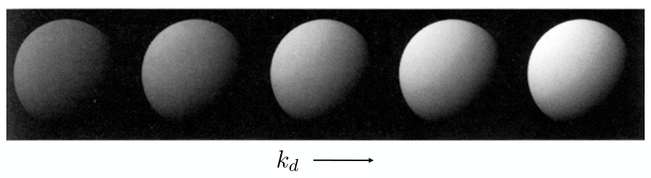
从公式中可以看到，计算漫反射光与观测方向
想必大家对这种小镜子并不陌生：
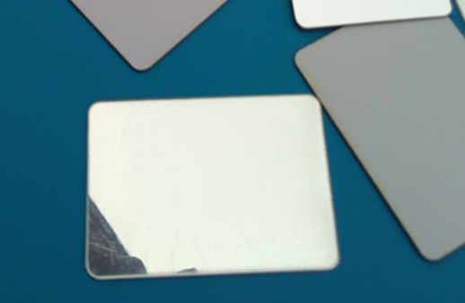
甚至绝大多数人对其都有年少的回忆，在中午的教室窗边，拿出小镜子将阳光反射到墙面上，或者晃一晃同学😆...... 当反射后的光晃到我们的眼睛时，会非常的刺眼，眼中所见全是白茫茫的光亮，我们知道，这是镜面反射。
那么在文章最开始的茶杯例子中，我们看到的那些高光的位置，同样只能看到白色光亮而看不到杯子本身的颜色，这与镜面反射是不是有什么关系呢？答案是肯定的，当我们的观测方向
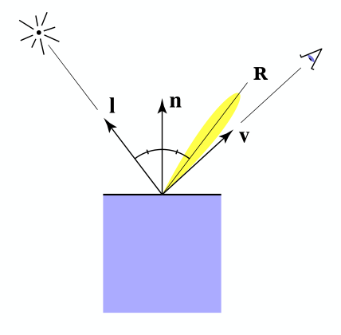
要计算
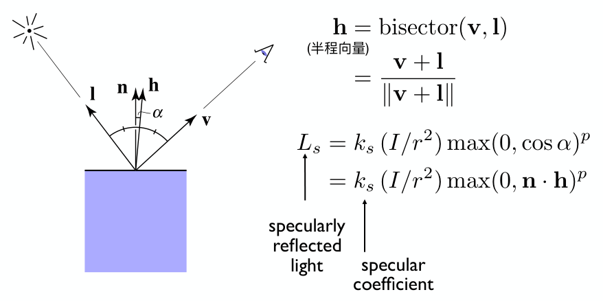
所谓半程向量
高光还需要考虑物体的镜面系数
在公式的最后部分
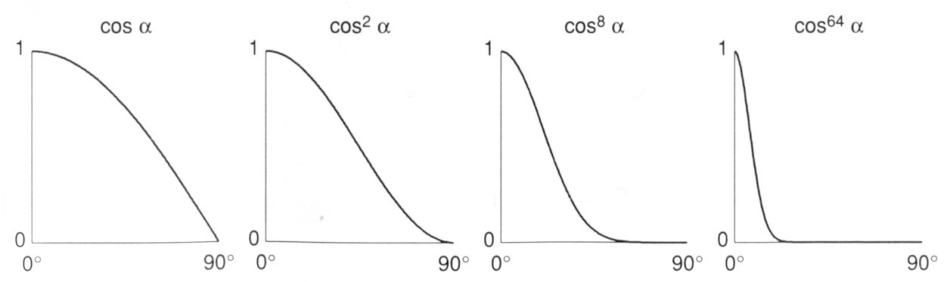
当
最后，再来直观地看一下
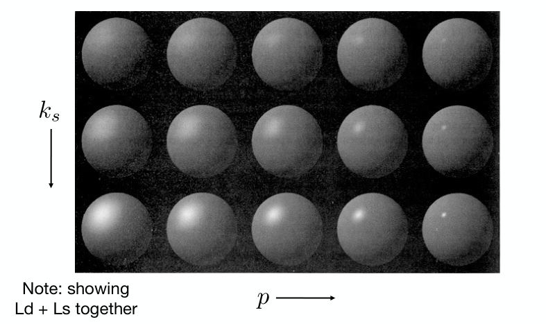
在文章开遍的茶杯例子中，虽然杯子的有些位置是光源无法直接照射到的，但是我们仍然能看到这些位置，这是因为这些位置接受并反射了各种环境中反射过来的光。
在布林冯反射模型中，假设任意位置接收到的环境光照强度为一固定值
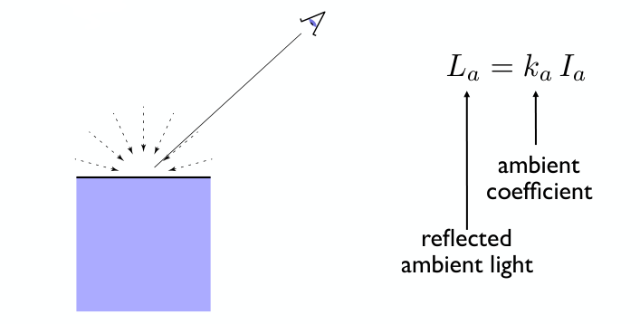
既然
切记：布林冯模型中的环境光是假设的，真实的环境光不是固定值。
到这里，布林冯反射模型就介绍完毕了，来看一下将漫反射、高光和环境光全部加到一起后的着色效果吧：
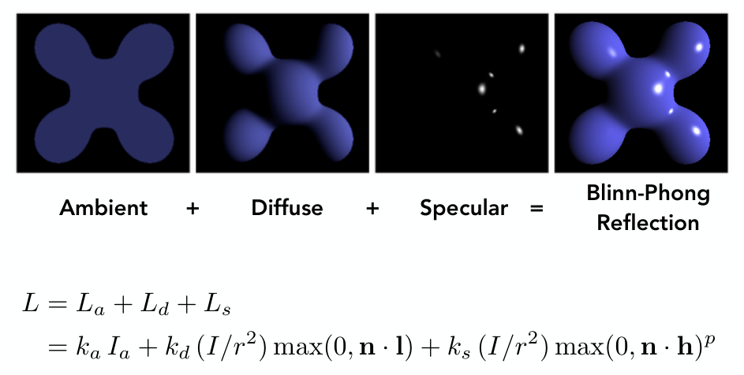
首先，来看一组着色效果图：
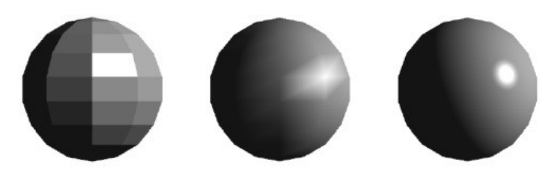
很明显，从左到右，着色的效果越来越好，左图是对多个三角形组成的平面进行着色；中图是对每个三角形的定点进行着色，三角形内部通过差值法来实现平滑的过度效果；右图是对每个像素进行着色。这三种着色方式，就分别对应下面三种着色频率：
对每个三角形进行着色，通过三角形的两条边的叉积得到三角形平面的法线方向，然后进行着色。这种着色方式不适合光滑的平面。
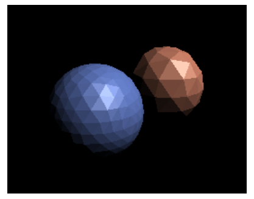
对每个三角形的定点进行着色，求出每个定点的法线，然后计算着色。三角形内部通过差值法进行着色。
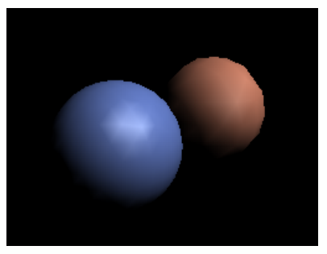
对每个像素进行着色。
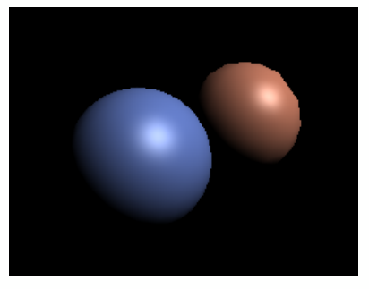
在对比选择三种着色频率时，需要根据模型的实际情况进行选择：
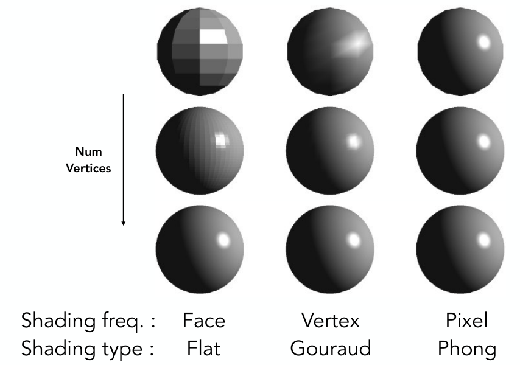
通过上图可以看到，当模型精细（包含的三角形数量多）到一定程度，Flat shading就能够得到很不错的着色效果，这种情况下，选择Phong shading不但对着色效果的提升有限，而且还会加大计算量，得不偿失。
图形管线（Graphics Pipeline）就是从"场景输入
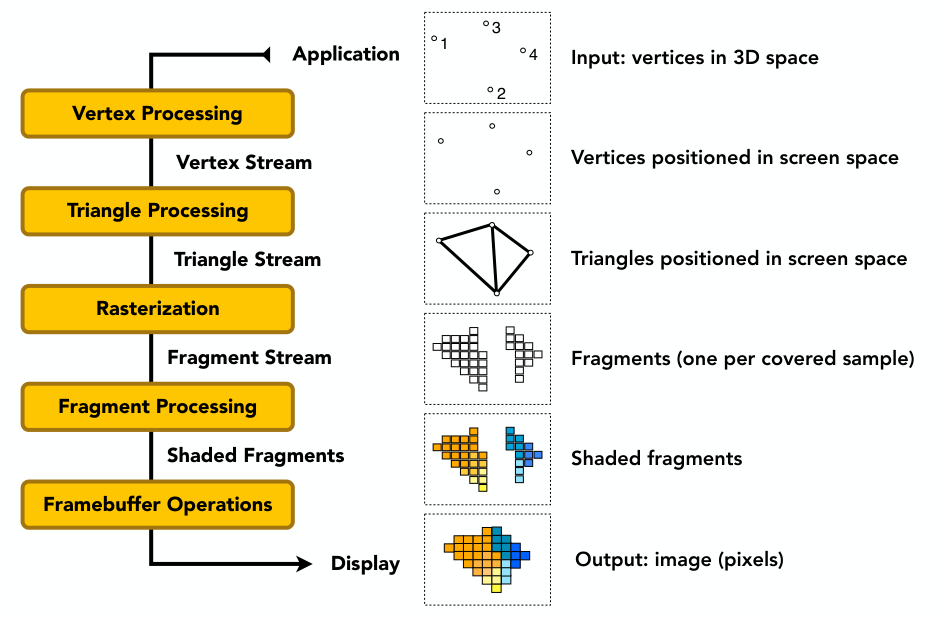
现在的GPU已经集成好了这一整套过程，我们只需要输入，GPU即可完成渲染输出，只不过，在一些GPU中允许用户都这一过程中的部分环节进行自定义编程（可以通过OpenGL等API），如着色，从而使渲染效果更加灵活。